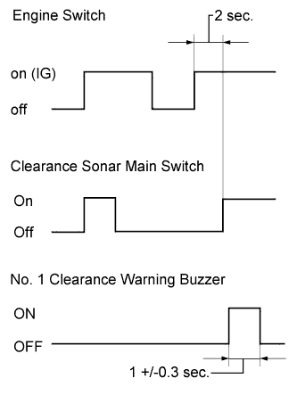
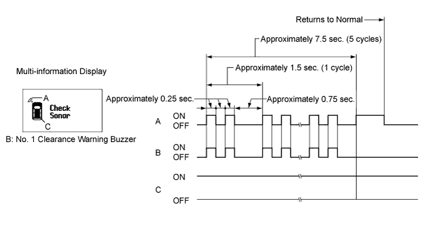
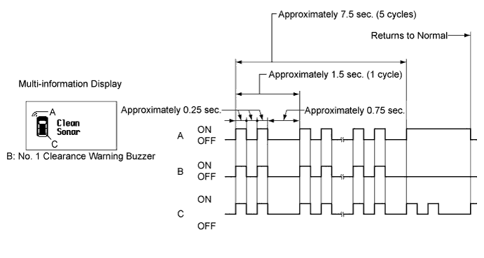
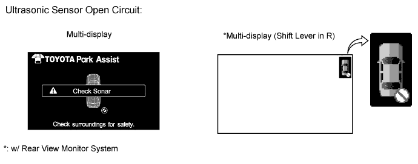
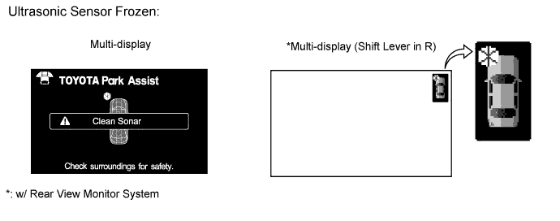
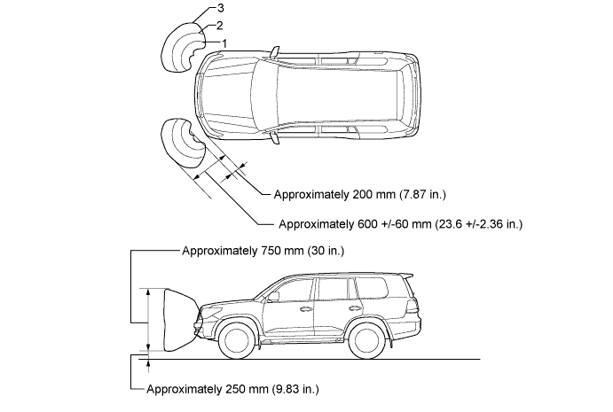
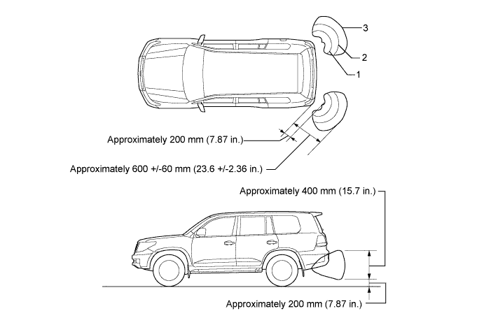
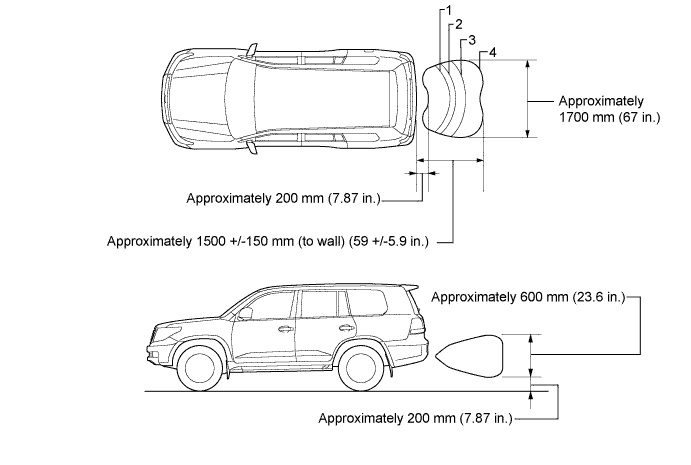
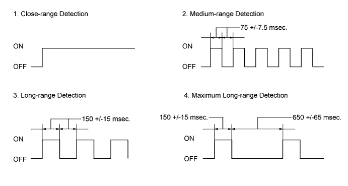
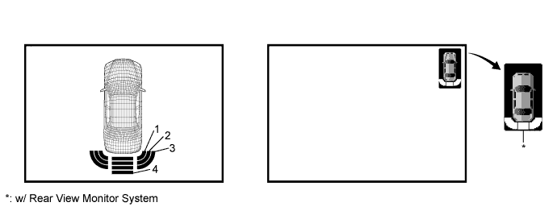

TOYOTA PARKING ASSIST-SENSOR SYSTEM > OPERATION CHECK |

| INITIAL CHECK FUNCTION |
Turn the engine switch on (IG).
After 2 seconds or more have passed, turn the clearance sonar main switch ON. Then check the buzzer sounding condition.
| MALFUNCTION OF MULTI-INFORMATION DISPLAY |
Ultrasonic sensor open circuit
If there is an open circuit between the ultrasonic sensor and the ECU or a sensor is malfunctioning, the malfunction is displayed as shown in the illustration.

Ultrasonic sensor frozen
If a sensor is covered with foreign matter, such as mud or snow, the affected sensor is displayed as shown in the illustration.

| MALFUNCTION OF MULTI-DISPLAY |
Ultrasonic sensor open circuit
If there is an open circuit between the ultrasonic sensor and the ECU or a sensor is malfunctioning, the malfunction is displayed as shown in the illustration.

Ultrasonic sensor frozen
If a sensor is covered with foreign matter, such as mud or snow, the affected sensor is displayed as shown in the illustration.

| DETECTION RANGE MEASUREMENT AND DISPLAY CHECK |
Turn the engine switch on (IG).
Move the shift lever to R to check the No. 1 ultrasonic sensors, No. 2 ultrasonic sensors and No. 3 ultrasonic sensors.
Move the shift lever to D and N to check the No. 1 ultrasonic sensors.
Turn the clearance sonar main switch on.
Move the φ60 mm (2.36 in.) pole around the sensor to measure the detection range of the sensor.
No. 1 ultrasonic sensors detection range

No. 2 ultrasonic sensor detection range

No. 3 ultrasonic sensor detection range

When the ultrasonic sensors have detected an obstacle, check the multi-display, multi-information display and that the No. 1 clearance warning buzzer sounds with the clearance sonar main switch on.
| Shift Lever Position | Vehicle Speed | Multi-display Detection, Multi-information Display Detection, Buzzer Detection | ||
| No. 1 Ultrasonic Sensor | No. 2 Ultrasonic Sensor | No. 3 Ultrasonic Sensor | ||
| P | - | Only perform check operation | ||
| D, S, (N) | 9 km/h (5.6 mph) or less | ○ | X | X |
| R | No limit | ○ | ○ | ○ |
Check that the buzzer sounds with the clearance sonar main switch on as shown in the illustration.

| Detection | Distance |
| 1. Close-range detection | Within 350 +/-40 mm (13.8 +/-1.57 in.) |
| 2. Medium-range detection | 350 +/-40 to 475 +/-50 mm (13.8 +/-1.57 to 18.7 +/-1.96 in.) |
| 3. Long-range detection | 475 +/-50 to 600 +/-60 mm (18.7 +/-1.96 to 23.6 +/- 2.36 in.) |
| Detection | Distance |
| 1. Close-range detection | Within 300 +/-30 mm (11.8 +/-1.18 in.) |
| 2. Medium-range detection | 300 +/-30 to 375 +/-40 mm (11.8 +/-1.18 to 14.8 +/-1.57 in.) |
| 3. Long-range detection | 375 +/-40 to 600 +/-60 mm (14.8 +/-1.57 to 23.6 +/-2.36 in.) |
| Detection | Distance |
| 1. Close-range detection | Within 350 +/-40 mm (13.8 +/-1.57 in.) |
| 2. Medium-range detection | 350 +/-40 to 450 +/-50 mm (13.8 +/-1.57 to 17.7 +/-1.96 in.) |
| 3. Long-range detection | 450 +/-50 to 600 +/-60 mm (17.7 +/-1.96 to 23.6 +/-2.36 in.) |
| 4. Maximum long-range detection | 600 +/-60 to 1500 +/-150 mm (23.6 +/-2.36 to 59.1 +/-5.91 in.) |
Check the multi-information display and buzzer when the No. 1 ultrasonic sensors have detected an obstacle.
| Engine Switch | Clearance Sonar Main Switch | Shift Lever Position | Vehicle Speed |
| on (IG) | On | D, N | 9 km/h (5.6 mph) or less |
| Detection Range | Buzzer | Number of Bars Displayed |
| 1. Close-range detection | Sounds continuously | 1 (blinking) |
| 2. Medium-range detection | Sounds intermittently (ON: 75 msec. / OFF: 75 msec.) | 2 (illuminated) |
| 3. Long-range detection | Sounds intermittently (ON: 150 msec. / OFF: 150 msec.) | 3 (illuminated) |
| Detection Range | Buzzer | Number of Bars Displayed |
| 1. Close-range detection | Sounds continuously | 1 (red illumination) |
| 2. Medium-range detection | Sounds intermittently (ON: 75 msec. / OFF: 75 msec.) | 2 (yellow illumination) |
| 3. Long-range detection | Sounds intermittently (ON: 150 msec. / OFF: 150 msec.) | 3 (yellow illumination) |
Check the multi-information display and buzzer when the No. 2 ultrasonic sensors and No. 3 ultrasonic sensors have detected an obstacle.
| Engine Switch | Clearance Sonar Main Switch | Shift Lever Position |
| on (IG) | On | R |
| Detection Range | Buzzer | Number of Bars Displayed |
| 1. Close-range detection | Sounds continuously | 1 (blinking) |
| 2. Medium-range detection | Sounds intermittently (ON: 75 msec. / OFF: 75 msec.) | 2 (illuminated) |
| 3. Long-range detection | Sounds intermittently (ON: 150 msec. / OFF: 150 msec.) | 3 (illuminated) |
| 4. Maximum long-range detection (for rear center sensors) | Sounds intermittently (ON: 150 msec. / OFF: 650 msec.) | 4 (illuminated) |

| Detection Range | Buzzer | Number of Bars Displayed |
| 1. Close-range detection | Sounds continuously | 1 (red illumination) *: Illumination (red) |
| 2. Medium-range detection | Sounds intermittently (ON: 75 msec. / OFF: 75 msec.) | 2 (yellow illumination) *: Blinking (yellow) |
| 3. Long-range detection | Sounds intermittently (ON: 150 msec. / OFF: 150 msec.) | 3 (yellow illumination) *: Blinking (yellow) |
| 4. Maximum long-range detection (for rear center sensors) | Sounds intermittently (ON: 150 msec. / OFF: 650 msec.) | 4 (yellow illumination) *: Blinking (yellow) |